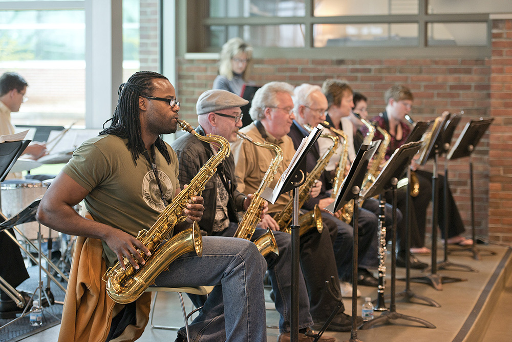
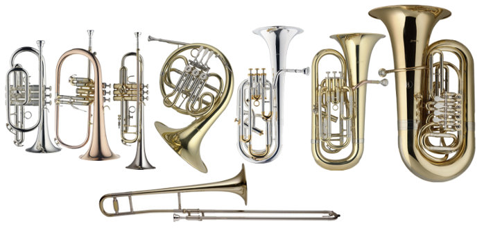

Over Ons
Jesse
Jesse, afgestudeerd aan het conservatorium, is een gepassioneerd jazzsaxofonist met een diepe liefde voor improvisatie. Met jarenlange ervaring in zowel solo-optredens als samenwerkingen met diverse ensembles, brengt Jesse een schat aan kennis en vaardigheden naar de muziekschool.
Hannah
Hannah, een virtuoze trompettist, heeft zich gespecialiseerd in de rijke tradities van de jazzmuziek. Ze heeft een bijzondere focus op het onderwijzen van jonge musici, waarbij ze haar technische expertise en passie voor jazz gebruikt om studenten te inspireren en te motiveren.
Onze Visie
Wij geloven in het bieden van hoogwaardig jazzonderwijs dat toegankelijk is voor iedereen, van beginners tot gevorderden. Onze visie is om een gemeenschap te creëren waarin muzikanten van alle leeftijden kunnen groeien, ontdekken en hun passie voor jazz delen.
Onze Specialisatie
Op de Jazz Muziekschool ligt onze focus op het onderwijzen en perfectioneren van de kunst van koperblaasinstrumenten en de saxofoon. Jesse en Hannah, beide met een indrukwekkende achtergrond in jazz en klassieke muziek, brengen hun liefde en diepgaande kennis van deze instrumenten over op elke leerling. Onze school onderscheidt zich door een unieke aanpak waarbij technische vaardigheden, improvisatie, en de geschiedenis van jazzmuziek worden gecombineerd om een rijke leerervaring te bieden.
Wij geloven dat het beheersen van deze instrumenten een diep begrip vereist van muziektheorie, gecombineerd met de expressieve mogelijkheden die jazzmuziek biedt. Onze cursussen zijn ontworpen om studenten niet alleen technisch bekwaam te maken, maar ook om hen te inspireren om hun eigen muzikale stem te vinden en te ontwikkelen. Met state-of-the-art faciliteiten, inclusief opnamestudio's en een concertzaal, biedt onze school de perfecte omgeving voor zowel beginners als gevorderde studenten om te excelleren.
Wat Onze Studenten Zeggen
"Dankzij de Jazz Muziekschool heb ik niet alleen mijn saxofoonvaardigheden verbeterd, maar heb ik ook de kans gekregen om met geweldige musici te spelen." - Emma
"De docenten zijn niet alleen uitstekende musici, maar ook inspirerende leraren. Elke les is een nieuw avontuur." - Lucas